What WorkDesk is
WorkDesk is GALIL's internal desk for reported time, planned weeks, tasks, expenses, budgets and approvals. One person's day goes in at the top; the company's utilisation, budget burn and payroll record come out at the bottom.
Open it in a browser — it is a single page, and V7.2 runs standalone with no server behind it. Everything you enter is stored in your own browser under the key galil-workdesk-v1, and your signed-in session under galil-workdesk-session.
In the standalone build, clearing your browser data deletes the company's records. Whoever administers WorkDesk should download a backup regularly — see chapter 16. Microsoft sign-in and the shared database are simulated locally in V7.1; the rules, routing and messages are the real ones.
The three hour colours
Every hour you report is one of three kinds, and almost every rule in WorkDesk follows from which one you pick.
- Red · Company
- Internal time. Never billed to a client, never drawn from a project budget, and never blocked — Red hours register straight away whatever else is going on.
- Yellow · Client
- Billable time. Drawn from your allowance on the assignment and from the project or work-order budget. Yellow and Blue are the hour types the entitlement engine checks.
- Blue · Management
- New in V7.1. Time spent managing a client's projects and tasks. Blue hours work just like Yellow hours: they are attributed to a client and project, drawn from your personal allowance on the assignment and from the project or work-order budget, and go to approval under the same checks. Only Team Leads, Project Managers, Operations Managers and the CEO can report it; the option does not appear for anyone else.
Sick and Vacation are day types rather than hour types. You choose a start and an end date, and every working day (Sunday to Thursday) in between is recorded as one day. Unless you are the CEO, they are sent to your manager as a Leave request and count only once approved.
The words WorkDesk uses
| Term | What it means here |
|---|---|
| Client | The organisation the work is for. GALIL (internal) is a client too — it is where Red hours sit. |
| Project | A body of work for one client. Carries a status, an owner and optionally a budget. |
| Work order | A contracted slice of a project, coded WO-[client initials]-[6 digits]. A project marked WO tracked requires one on every entry. |
| Task | A unit of work inside a project, with a status, a priority, assignees and optionally an hour allowance. |
| Assignment | The link between a person and a project or work order. It carries that person's allowance in hours. No assignment means Yellow and Blue time goes to approval. |
| Allowance | Hours one person may report on one assignment. Blank means unlimited within the project budget; 0 means assigned but not yet funded. |
| Budget | Hours (or money, pages, words, custom units) agreed for a project or work order, across everyone. |
| Entitlement engine | The checks that decide, the moment you save, whether an entry registers or goes to approval. See chapter 6. |
Dates, times and numbers
Dates display Israeli-style, 11/09/2026, and long dates as Friday, 11/09/2026. Times are 24-hour. Hours are derived from start and end and rounded to the nearest half hour — you never type a duration. Money shows with its currency symbol; ₪, $ and € are available.
How WorkDesk fits together
Every screen in WorkDesk works on the same small set of records. Once you know what they are and how they point at each other, every rule in the rest of this handbook — why an entry went to approval, where a budget's hours went, who a request is sent to — follows on its own.
The records
- Client
- A company GALIL works for, or GALIL (internal) for in-house work. Everything billable starts with a client.
- Project
- A piece of work for one client — a manual, a help system, a training package. A project has an owner (usually a Project Manager) and a status.
- Work order
- A contract line inside a project — the client's purchase order for one part of it, with its own code such as
WO-IAI-004182. A project can have none, one or many. - Budget
- The hours the client is paying for, attached to a work order, a project, or a whole client. Money budgets are turned into hours (amount ÷ hourly rate); Pages, Words and Custom budgets also count deliverables.
- Assignment
- The link between one person and a project or one of its work orders, carrying that person's allowance — the hours they may report there before their entries need approval.
- Task
- A unit of work inside a project — and, on a work-order-tracked project, inside one work order. A task has assignees, a status, a due date, dependencies and an optional hour allowance.
- Time entry
- Hours one person reports for one day: Red, Yellow or Blue, against a client, project, work order and optionally a task. Sick and Vacation days are entries too.
- Approval request
- Anything that needs someone else's decision: a time entry that failed a check, leave, an expense, an allowance increase, a team loan or transfer, a new account.
- Team and direct manager
- Each person can belong to a team, which has a team lead, and has a direct manager. Between them they decide who receives the person's requests.
Setting up a piece of client work, in order
- Client — Management → Clients. Usually already there.
- Project — Management → Projects. Give it an owner; that Project Manager sees its budgets and decides its Budget exceeded requests.
- Work orders (if the client issues them) — Management → Work Orders. The first work order on a project marks it WO tracked: from then on every Yellow or Blue entry and every task on it must name a work order. Entering budgeted hours when you create the work order also creates its budget.
- Budget — Management → Budgets, on the work order (most common), on the project, or on the client.
- Assignments — Management → Assignments & Allowances. Assign each person to the project or to a specific work order, with an allowance: a number of hours,
0(assigned but not yet funded) or blank (unlimited within the budget). - Tasks — Tasks → + New task. Bind each task to the project and, on a WO-tracked project, to a work order; add assignees and an hour allowance.
- People report time against it. Everything else — consumption, warnings, approvals, the Dashboard — follows from those entries.
How work orders work
- A work order always belongs to one project, and through it to one client. Its code is proposed from the client's initials.
- Creating the first work order on a project switches the project to WO tracked. On a tracked project, the Time Log form refuses Yellow or Blue time without a work order, and the task editor refuses a task without one.
- A work order normally carries its own budget. Hours reported against the work order are deducted from that budget only — not from a sibling work order's.
- An assignment can name a work order or just the project. A work-order assignment is checked first; if there is none, a project-level assignment covers every work order in the project.
- Click a work-order code anywhere in a table to copy it.
How tasks work with assignments
Tasks and assignments are two different things, and you usually need both:
| Assignment | Task assignee | |
|---|---|---|
| Answers | May this person book hours on this project or work order, and how many? | Is this person working on this piece of work? |
| Set in | Management → Assignments & Allowances | The task editor's Assignees |
| Controls | Whether entries register or go to approval (Not assigned, Allowance exceeded) | Which tasks a person can pick in the Time Log, and Task not assigned |
| Hours | Allowance — enforced by the entitlement engine | Task hour allowance — tracked on the task card, not enforced |
Binding a task to a project: open Tasks → + New task (or edit an existing one), choose the Project, then the Work order if the project is WO tracked. The task now appears in that project's board, in Project view, and in the Time Log's Task dropdown for its assignees whenever they choose that project and work order.
When someone reports time with a task selected:
- They still need an assignment on the project or work order — a task on its own does not let anyone book hours. Without one the entry goes to approval as Not assigned; approving it creates the missing assignment.
- If they are not one of the task's assignees, the entry goes to approval as Task not assigned. If the task is Done or Cancelled, as Task closed.
- The hours count toward the task's progress bar (Red, Yellow and Blue alike) and toward the person's assignment allowance and the budget (Yellow and Blue only), exactly as an entry without a task would.
A team loan (see Teams) does both at once: on approval it creates the assignment — limited to the loan's dates — and adds the person to the task.
How hours are deducted from a budget
Only registered entries are ever deducted. An entry in approval is shown separately — amber, In approval — and is deducted only if and when it is approved.
- Which hours count. Yellow · Client and Blue · Management hours. Red · Company hours, Sick and Vacation days are never deducted from a budget or an allowance.
- Which budget. The most specific one: the entry's work-order budget if the work order has one, otherwise the project budget. A project budget counts every Yellow and Blue hour on the project, including hours booked to its work orders.
- Which allowance. The person's assignment on that work order, otherwise their project-level assignment on that project. Both the allowance and the budget are reduced by the same hours.
- The checks. Before registering, WorkDesk adds the new hours to what is already consumed. Past the allowance → Allowance exceeded, to the team lead. Past the budget → Budget exceeded, to the Project Manager who owns the budget.
- What the budget card shows. Budgeted, Consumed, In approval, Remaining, % used (amber at 90 %, red at 100 %) and a projected exhaustion date from the last 30 days' burn. Money budgets also show the value consumed (consumed hours × rate); Pages, Words and Custom budgets show deliverables produced against the target.
Work order WO-IAI-004182 has a Money budget of ₪180,000 at ₪300/h — 600 budgeted hours. Yossi is assigned to it with an allowance of 40 h and has 38 h registered. He reports a 4-hour Yellow entry: 38 + 4 = 42 > 40, so the entry is saved as Pending — Allowance exceeded and routed to his team lead. Nothing is deducted yet; the budget card shows 4 h In approval. When the team lead approves — optionally raising the allowance by the 2-hour overage — the entry registers, the budget's Consumed rises by 4 h and its Value consumed by ₪1,200.
Who receives what
| Request | Goes to |
|---|---|
| Time entry — most reasons | The person's team lead → their direct manager → a Project Manager → Operations → the CEO |
| Time entry — Budget exceeded | A Project Manager → Operations → the CEO |
| Sick or vacation leave | The person's direct manager first, then the chain above. The CEO's own entries register directly. |
| Team loan or transfer | Whoever the requester picks: the person's team lead, their direct manager, or the CEO |
| Expense above its type's ceiling | The same chain as a time entry — team lead first |
Nobody ever decides their own request, and Operations Managers and the CEO can act on any request. Team leads and direct managers are set in Management → Teams.
Everything else, in one line each
- Week Planner — planned hours per day against the same clients, projects and work orders; compared with registered actuals as Planned, Actual and Variance. Plans never consume a budget.
- Expenses — money or hours claimed against a client, project and work order, with evidence. A claim within its expense type's ceiling is approved on saving; above the ceiling it goes to approval. Approvers then mark it Paid or Rejected. Expenses do not reduce an hour budget.
- Dashboard — registered entries only, filtered by period, people, client, project, work order and task.
- Library — shared notes, tagged and optionally linked to clients and projects.
- Audit log — every change above, with who made it and when.
Signing in and signing up
Only @galiltc.co.il addresses may sign in. External contractors do not sign themselves up — an administrator provisions them.
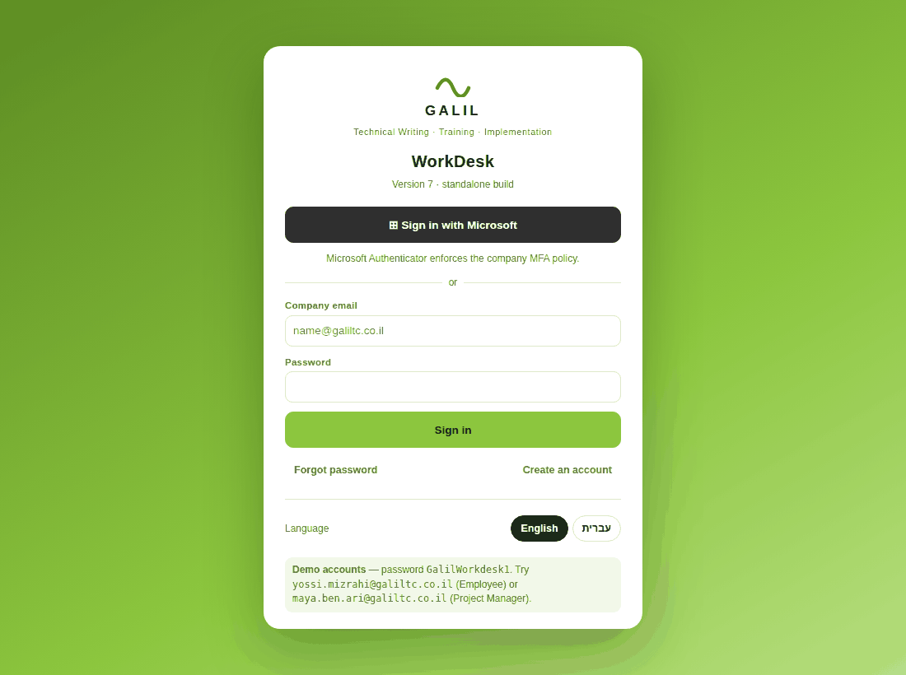
GalilWorkdesk1.Sign in with Microsoft
- Click Sign in with Microsoft.
- Approve the request in Microsoft Authenticator — this is where the company MFA policy is enforced.
- Choose your account from the list.
In the standalone build the account chooser lists the seeded demo accounts so you can try any role — see the reference chapter.
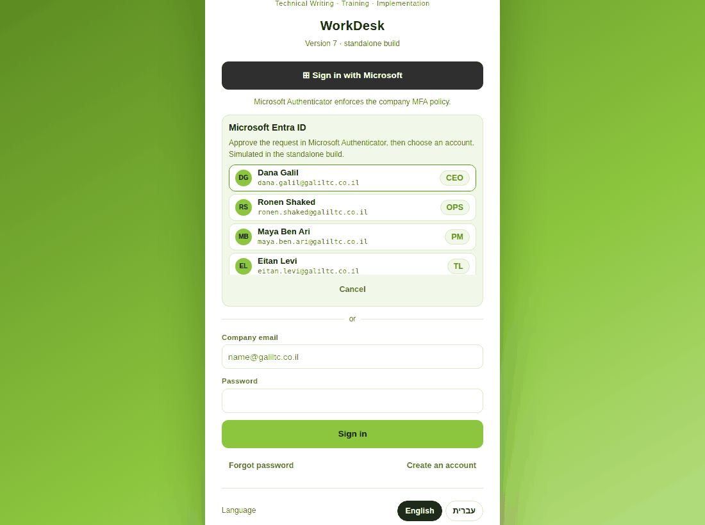
Sign in with email and password
- Type your company email and password, then press Enter or click Sign in.
- If the address does not end in
@galiltc.co.il, WorkDesk refuses it before checking the password.
Five consecutive failures lock the account and count down the minutes remaining before you can try again.
Forgotten password
Click Forgot password, enter your company address, and a single-use reset link valid for 30 minutes is sent (simulated in the standalone build).
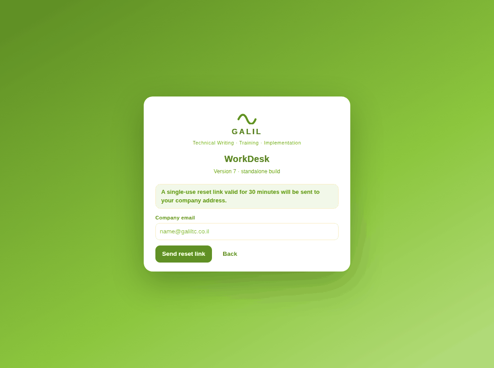
Creating an account — the four-step wizard
Click Create an account on the sign-in card. The wizard will not let you past a step with an error on it.
Step 1 · Identity
Full name in English (Hebrew optional), company email, mobile number for MFA enrolment, and either a password or a linked Microsoft account.
A password must be at least 12 characters and contain an upper-case letter, a lower-case letter and a digit.
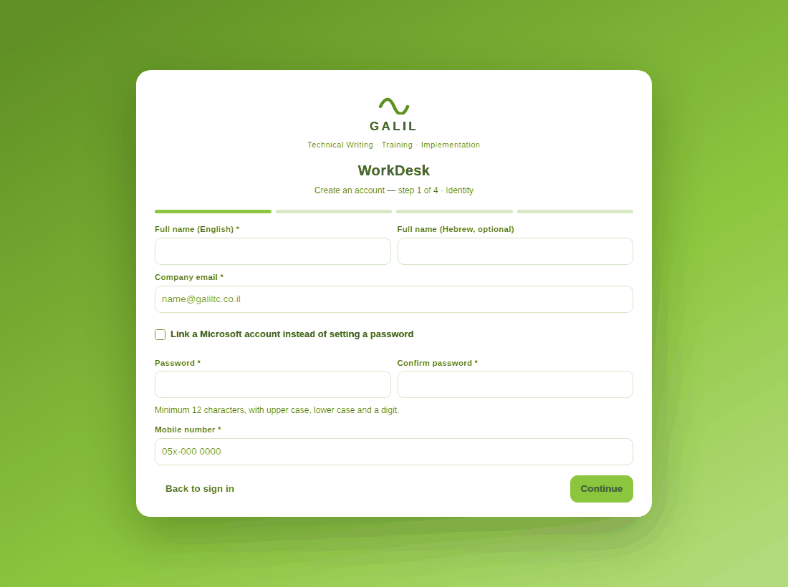
Step 2 · Role
Employee is the default. You may self-select Employee, Senior Employee or Team Lead. Every role above Team Lead is marked needs approval — requesting one creates an extra administrator task on top of the normal activation request.
Step 3 · Profile
Job title and department are required. Team, direct manager, start date, contracted weekly and daily hours, employment type and a profile photo are optional but worth filling in — contracted hours drive the capacity warning in the Week Planner.

Step 4 · Confirm
Check the summary, accept the internal usage policy, and click Submit for activation.
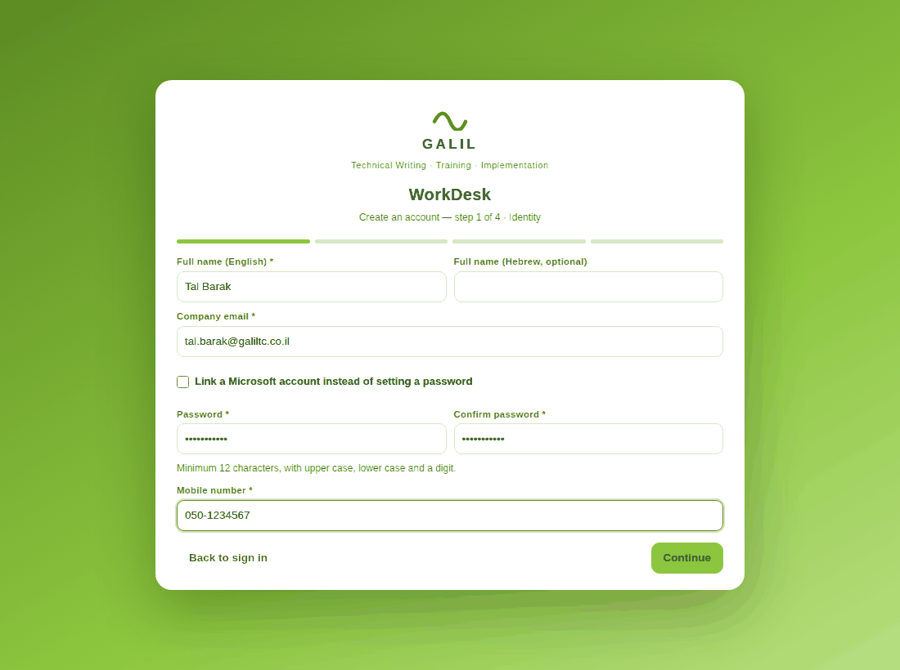
Waiting for activation
The account exists immediately but is held. Until an Operations Manager or the CEO activates it, signing in shows the holding screen and nothing else — see chapter 15.
Sessions and signing out
A session lasts 12 hours of inactivity. Concurrent sessions on several devices are permitted and can be revoked. Open your profile from the top-right corner to see your sessions and to sign out.
Every sign-in and sign-out is written to the audit log with actor, timestamp and device.
Roles and permissions
Nine roles. What you see, what you may change, and whose records you may touch all follow from yours — including which tabs appear at all.
The nine roles
| Code | Role | What it carries |
|---|---|---|
EMP | Employee | Reports own time, plans own week, reports own expenses, works assigned tasks, writes to the Library. |
SEN | Senior Employee | As Employee, plus may create draft tasks within assigned projects and see their full task board. |
TL | Team Lead | As Senior Employee, plus approves time and expenses for their team and manages task assignment. |
PM | Project Manager | As Team Lead, plus owns projects, work orders, budgets and assignments. |
OPS | Operations Manager | As Project Manager across all clients. Manages master lists, employees, roles and settings. |
FIN | Finance | Read-only across budgets, expenses, work orders and exports. Cannot approve time. |
CEO | CEO / Owner | Full access, including role assignment, deletion, audit log and company settings. |
EXT | External Contractor | Reports time only against explicitly assigned work orders. No budgets, Library or Dashboard. |
VIEW | Viewer | Read-only dashboard access for a named stakeholder. No reporting rights. |
Scope letters
A permission is not simply on or off — it carries a scope that says whose records it reaches.
T · own team means: people sharing your team, people who report to you, and everyone in a team you lead. P · own projects means: projects you own, plus projects you are assigned to, and everyone who has reported time or holds an assignment on them.
The full permission matrix
This is the same matrix the application shows under ⚙ → Roles & permissions.
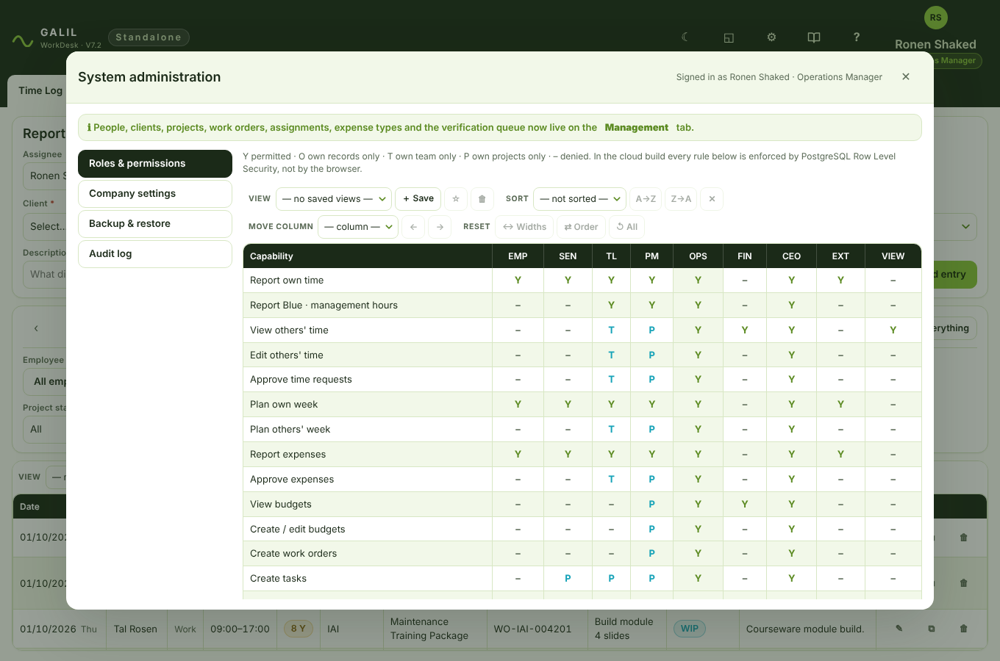
Which tabs each role sees
Tabs are hidden rather than disabled, so two people can be looking at very different applications.
| Role | Tabs shown |
|---|---|
EMP SEN | Time Log · Week Planner · Tasks · Expenses · Dashboard · Library |
TL | Time Log · Week Planner · Tasks · Expenses · Management (People & Assignments only, own team) · Approvals · Dashboard · Library |
PM OPS CEO | Time Log · Week Planner · Tasks · Expenses · Management (full) · Approvals · Dashboard · Library |
FIN | Time Log (read-only) · Tasks · Management (Budgets, read-only) · Dashboard · Library |
EXT | Time Log · Week Planner · Tasks · Expenses |
VIEW | Time Log (read-only) · Dashboard |
Budget values visibility starts at Project Manager — a Team Lead's Management tab carries People and Assignments & allowances for their own team, not Budgets, so they approve their team's time without seeing what the project is worth.
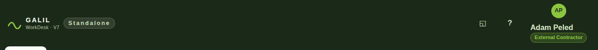
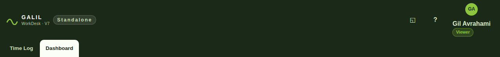
How a role is set or changed
- At sign-up you request a role. Anything above Team Lead raises a Role change request as well as the activation request.
- An Operations Manager or the CEO confirms the role at activation — they may change it before activating.
- Afterwards, the role is changed in ⚙ → People using the dropdown in the Role column. Every change is written to the audit log as
Role change EMP → SEN for …. - Only
OPSandCEOmay manage employees and roles. Nobody else, at any level, can promote anyone.
Finding your way around
One dark top bar, one row of tabs, and a few icon buttons that open everything that is not a tab.
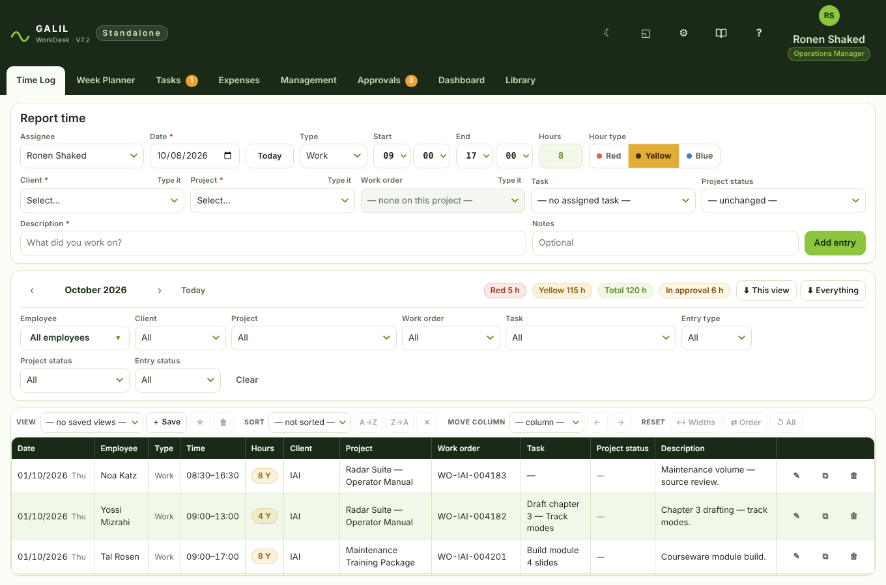
| Element | What it does |
|---|---|
| GALIL · WorkDesk V7.2 | Brand and build. The Standalone chip is a reminder that there is no server behind this build. |
| Offline chip | Appears when the browser goes offline. Changes are still written locally. |
| ◱ icon | My assignments and allowances — your funded work and the button that requests more hours. See chapter 14. |
| ⚙ icon | System administration — Roles & permissions, Company settings, Backup & restore and the Audit log. Shown to anyone who can back up data or read the audit log. Day-to-day record-keeping lives on the Management tab instead — see chapter 10. |
| ☾ / ☀ icon | Switches between the light and dark theme. The choice is remembered on this device and applies everywhere in WorkDesk, including the mobile shell below. |
| ? icon | Opens this handbook in a new tab, from anywhere in the app. |
| Your name chip | Opens your profile — contracted hours, manager, sign-in method, sessions, and Sign out. |
| Tab badges | Amber on Approvals counts outstanding requests waiting on you. Amber on Tasks counts your overdue tasks. |
| Toasts | Confirmations appear bottom-of-screen for a few seconds. Deletions carry an Undo button — use it before it fades. |
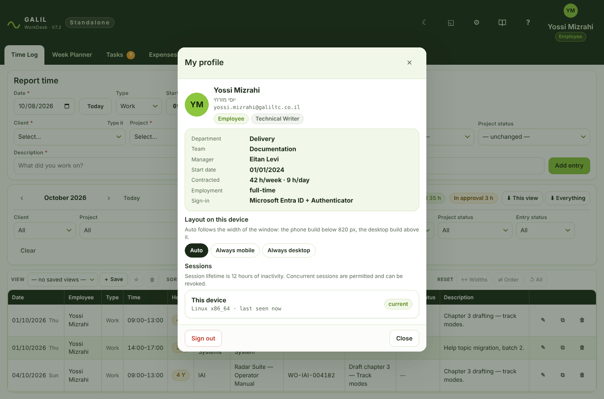
Working with tables
Every table in WorkDesk — the Time Log, the Tasks list and project views, Expenses, every Management section, the Roles matrix and Audit log, and My assignments — works the same way. Each one has a toolbar row directly above it.
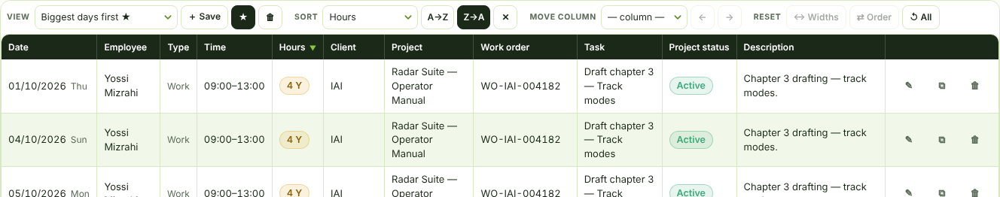
- Sort — click a column heading to sort A→Z (lowest first), again for Z→A (highest first), and a third time to clear it. A ▲ or ▼ beside the heading shows the sort in use. The Sort picker and its A→Z, Z→A and ✕ buttons in the toolbar do the same. Dates and numbers sort by value, and empty cells always go last.
- Move a column — drag its heading onto another column, or choose it in Move column and use ← and →.
- Resize a column — drag the right edge of its heading. Double-click that edge, or click ↔ Widths, to return to automatic widths that fit the content.
- Reset — ⇄ Order restores the original column order; ↺ All clears the sort, order and widths together.
Saved views. Click ＋ Save to keep the current sort, column order and widths under a name; saving under an existing name replaces it. Pick a view from the View list to apply it. With a view chosen, ☆ makes it open automatically every time you open that table (it turns to ★, and the view is marked ★ in the list); click again to stop. 🗑 deletes the chosen view. Views belong to you and to that one table — each person keeps their own, and a view saved on the Time Log is not offered on Expenses.
galil-workdesk-table-views, separately from your WorkDesk data, so they are not part of a backup and do not follow you to another computer. A sort or column change you have not saved lasts until the page is reloaded; after that the table opens with your ★ default view, or in its original layout.On a phone
Below 820 px WorkDesk swaps the whole shell for a dedicated mobile build, rather than just squeezing the desktop layout into a narrow column: one page at a time, a bottom navigation bar, native date and time pickers, and every tap target at least 44 px tall. It is the same data and the same rules underneath — every entry still runs through the entitlement engine — just laid out for a thumb instead of a mouse.
| Bottom tab | What it holds |
|---|---|
| Time | A running timer — ▶ Start the timer, then ■ Stop and report when you're done, which opens the entry form pre-filled with the start and end times. Report without the timer skips straight to that form. Each entry below can be edited, duplicated with ⧉ Duplicate… (the same choices as on the desktop — see Duplicating an entry), or deleted, the same as on the desktop Time Log. |
| Plan | The Week Planner, one day at a time. |
| Tasks | My tasks / All I can see and a status filter above a list of cards; change a task's status from the dropdown on its card. |
| Expenses | + Report an expense opens a bottom sheet with the same fields — and the same evidence attachment control — as the desktop form. |
| More | Library, Approvals (if you approve anything), My assignments and allowances, My profile, and a link back to the desktop layout. |
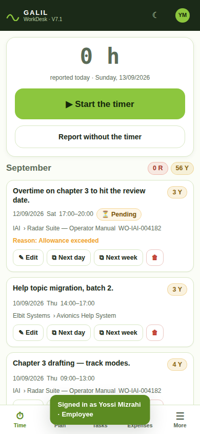
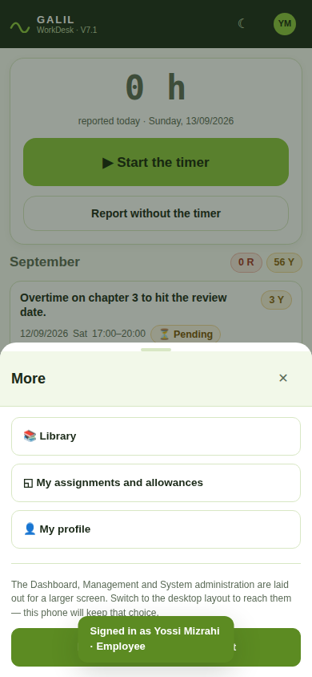
The Dashboard, Management and System administration are laid out for a larger screen and are not part of the mobile shell. My profile → Layout on this device lets you pin the layout to Always mobile or Always desktop instead of following the window width automatically.
Time Log
Where the day is reported. A form band at the top, a month of entries below it, and an engine in between that decides whether each entry registers or goes to an approver.
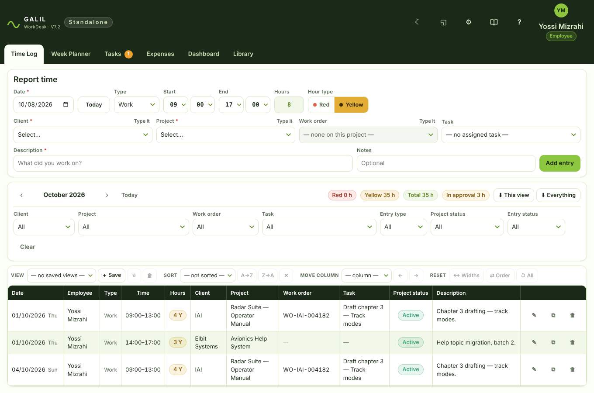
Reporting time
- Set the Date, or click Today. Future dates are refused — plan those in the Week Planner instead.
- Choose the Type: Work, Sick or Vacation. Sick and Vacation hide the time fields — see Sick and vacation days below.
- Set Start and End from the hour and minute dropdowns. Hours fills itself, rounded to the nearest half hour.
- Pick the Hour type — Red · Company, Yellow · Client, or — if you manage clients' projects and tasks — Blue · Management.
- For Yellow or Blue, choose Client, Project, and Work order if the project is work-order tracked. Optionally pick a Task.
- Write a Description — it is required. Notes are optional.
- Click Add entry.
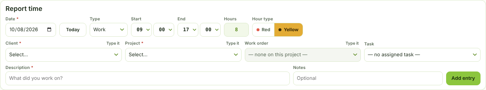
Each of Client, Project and Work order has a Type it toggle for something not yet on the master list. Typing a name is allowed, but the entry then goes to approval as an Unlisted item, and on approval the name becomes a real master-list record.
Sick and vacation days
- Set the Type to Sick or Vacation.
- Set From and To. Days counts the working days (Sunday to Thursday) in the range — Fridays and Saturdays are skipped. Future dates are allowed, so vacation can be requested ahead of time. One request covers up to 60 working days.
- For Sick, use Sick-leave confirmation to attach the confirmation from the clinic or doctor's office — a PDF or an image, up to 2 MB. You can replace or remove it before sending.
- Add a Description and click Send request.
The form shows who the request goes to: your direct manager, or — if you have none — the usual approval chain. Every day in the range is saved as Pending and stays out of the totals until your manager approves or declines the whole request at once. A decline cancels every day in it, and the reason is shown on each.
The CEO is the only role whose sick and vacation days register directly, without a request — for their own leave or anyone else's.
An attached confirmation appears as a 📎 button on each day in the Time Log and on the request card in Approvals; click it to open the document.
What the form refuses to save
- End time not later than start time.
- An empty description.
- Yellow or Blue time with no client, or no project. Switch to Red if it is internal.
- No work order on a project that is tracked by work order.
- An overlap with another entry you already reported that day — the message names the clashing times.
- An identical entry (same date, same start and end, same description).
- A future date (Work entries only — Sick and Vacation can be in the future).
- Sick or Vacation on a day already recorded as leave, or a range with no working days.
- A date inside a month that has been closed for payroll.
The entitlement engine
The moment you save, WorkDesk runs these checks in order. The first one that fails sets the entry to Pending, records the reason, and raises an approval request.
| # | Check | Outcome |
|---|---|---|
| 1 | Sick or Vacation | Pending — Leave request, routed to your direct manager. Registers directly only when the CEO records it. |
| 2 | Red · Company | Registers directly — never gated by an assignment, allowance or budget. Still counts toward the daily soft and hard limits below. Blue · Management is not exempt: it goes through checks 3–9 exactly like Yellow. |
| 3 | Unlisted client, project or work order | Pending — Unlisted item. |
| 4 | Assigned to that project or work order? | Pending — Not assigned. |
| 5 | Task selected but not assigned to you, or already Done / Cancelled | Pending — Task not assigned or Task closed. |
| 6 | Your allowance on that assignment | Pending — Allowance exceeded. |
| 7 | Project or work-order budget | Pending — Budget exceeded. Escalates to the project owner rather than your team lead. |
| 8 | Daily hard limit (default 12 h) | Pending — Daily limit exceeded. |
| 9 | Daily soft limit (default 9 h) | Registers, flagged amber. No approval needed. |
| 10 | Everything else | Registers. |
Consumption counts registered Yellow and Blue hours. Anything pending is never counted against an allowance or a budget, and never appears in an on-screen total — which is why pending hours are shown separately, in amber, as In approval.
Once you pick a project, a banner above the form tells you where you stand on that assignment: grey from 75 %, amber from 90 %, red at 100 % — "Further entries are accepted but routed to approval." You are never blocked; you are routed.
Entry statuses
| Status | Meaning |
|---|---|
| Registered | Counted. Included in totals, budgets and exports. |
| Pending | Waiting on an approver. Excluded from every total. The row is tinted and shows its reason. |
| Cancelled | Declined. Stays visible to you with the approver's reason, and never contributes hours. |
| Locked | The month was closed for payroll. Not editable; changing it needs a retroactive-edit request. |
Editing, deleting and correcting
- ✎ loads an entry back into the form band. Saving a pending entry re-runs the engine; saving a registered entry as an approver leaves it registered.
- 🗑 deletes it and cancels any pending approval attached. The toast offers Undo.
- The Project status column shows the project's current status as set under Management → Projects. It is read-only here; the project status filter uses the same value.
- You may always edit your own entries. Editing someone else's needs
editOthersTime— Team Lead within their team, Project Manager within their projects, Operations Manager and CEO anywhere. - Click a Work order code anywhere in the table to copy it to the clipboard — useful when pasting it into an email or another system. A small confirmation toast names what was copied.
Duplicating an entry
The ⧉ button next to a Work entry (⧉ Duplicate… on the phone) opens the duplicate options:
- ← Previous day, Next day →, ← Previous week, Next week → — one copy, one day or seven days away.
- Custom — type a number of days and choose days back or days forward. On its own this makes one copy that many days away. Tick Copy to every working day in between to copy the entry onto every Sunday-to-Thursday in that range instead — for example 5 days back copies it onto each working day of the past five days. The line under the field shows the date, or how many days, before you click Duplicate.
- Specific date — pick any date up to today and click Duplicate.
Every copy takes the entry's client, project, work order, task, hour type, times and description, and goes through the entitlement engine as a fresh entry — it can land Pending even if the original was Registered, for example if the copy would now exceed an allowance. Dates that can't take a copy are skipped and named in the message: dates after today (plan those in the Week Planner), closed months, and days where the copy would overlap an entry already there or repeat it exactly.
Filtering and totals
The month navigator moves one month at a time; Today returns to the current one. Below it, filter by employee, client, project, work order, task, entry type, project status and entry status. Clear resets every filter at once. Totals always describe the filtered view. To sort the entries, rearrange or resize columns, or save the layout as a view, see Working with tables.
Exporting
⬇ This view exports the filtered month. ⬇ Everything exports everything within your permission scope — which for an Employee, Senior Employee or External Contractor means their own records only. Pending entries are moved to a second worksheet so they can never be mistaken for reported time. See chapter 17.
Week Planner
Intent, not record. Planned entries never count as reported hours — they exist so you can see the week before it happens and compare it afterwards.
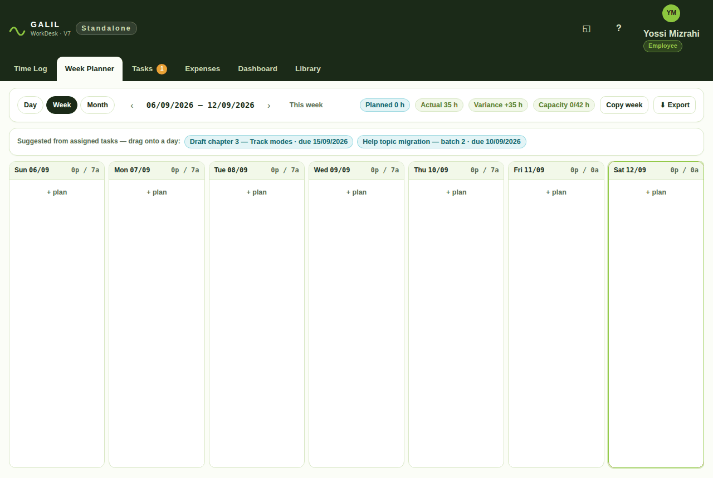
Planning a block
- Choose Day, Week or Month (a four-week grid), and move with ‹ › or This week.
- Click + plan in a day column.
- Set start and end — derived hours appear beneath — then hour type, client, project, work order, task and a description.
- Save. Drag the card to another day at any time.
Suggestions from your tasks
Assigned tasks that have a due date and are not yet Done or Cancelled appear as teal chips above the grid. Drag one onto a day and the planned entry is created pre-filled with that task's project, work order and title.
Capacity, variance and copying
- Planned, Actual and Variance chips compare the plan with registered time over the same span.
- Capacity compares the plan against contracted hours (weekly hours, scaled to the visible span). Planning past capacity turns the chip amber and adds a banner.
- Copy week duplicates every visible planned entry forward by seven days.
- ⬇ Export produces a plan-against-actual worksheet with a variance column.
Planning for someone else
With planOthersWeek a Planning for selector appears. Team Leads see their team, Project Managers their projects' people, Operations Managers and the CEO everyone. Saving a change to someone else's plan notifies them.
Tasks
Four views over the same task list: your own, a drag-and-drop board, a flat table and a per-project roll-up with consumption bars.
What you can see
OPS,CEOandFINsee every task.EXTsees only tasks explicitly assigned to them.- Everyone else sees tasks assigned to them, plus every task on a project they own or are assigned to.
VIEWhas no Tasks tab.
The four views
My tasks — the board, filtered to you; the default view for Employees and contractors. Board — six columns: To do, In progress, Blocked, In review, Done, Cancelled. List — sorted by due date, with an inline status dropdown on every task whose status you may change. Project view — grouped by project, with hours consumed against allowance per task and in total.
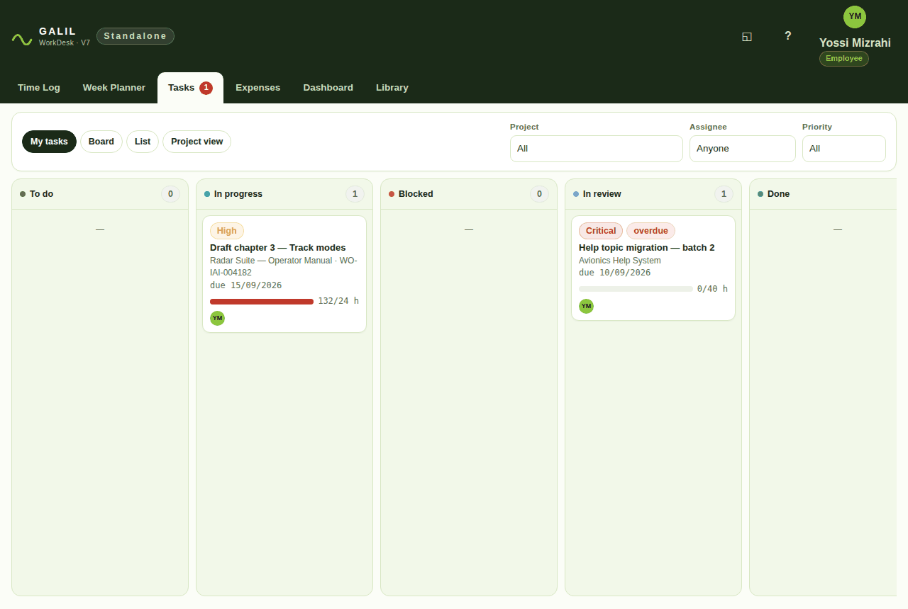
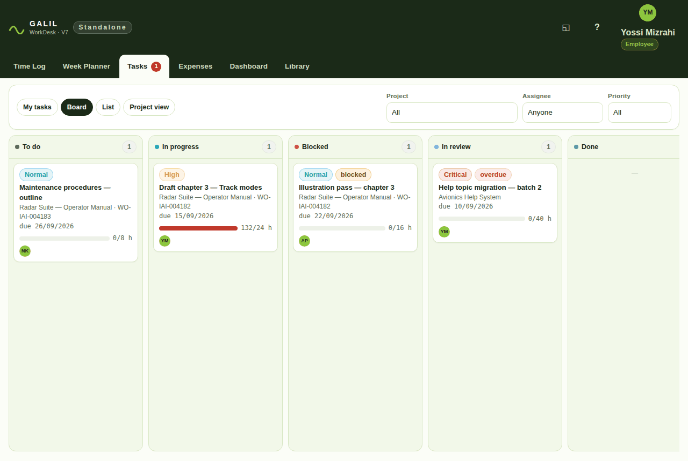
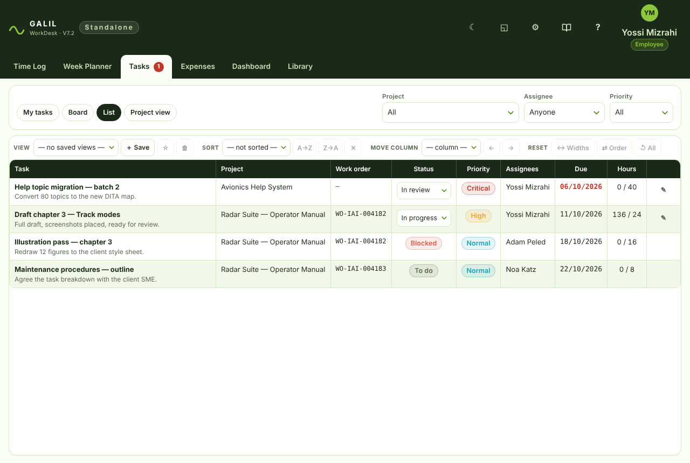
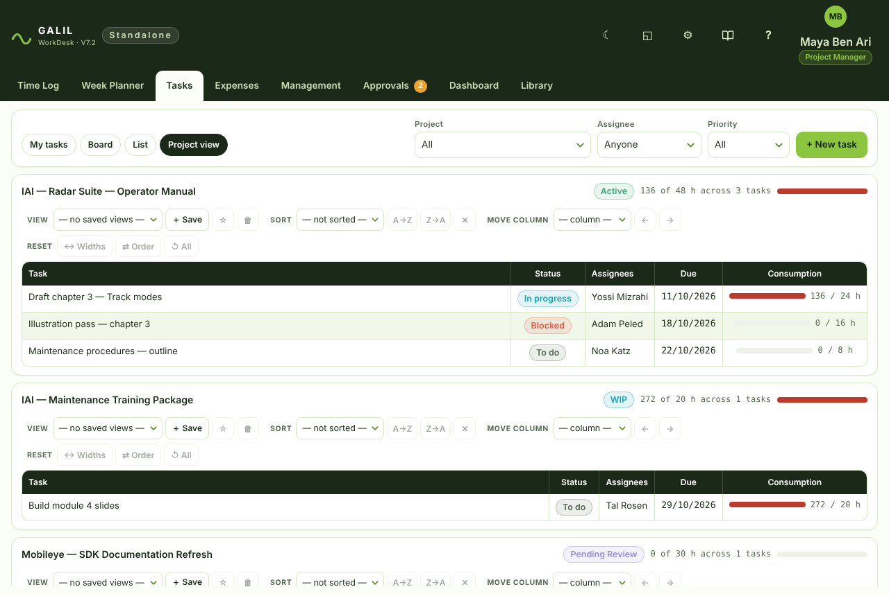
Creating and editing a task
Click + New task, or click any card to edit. Title, project and description are all required — the description prompt asks what does done look like?
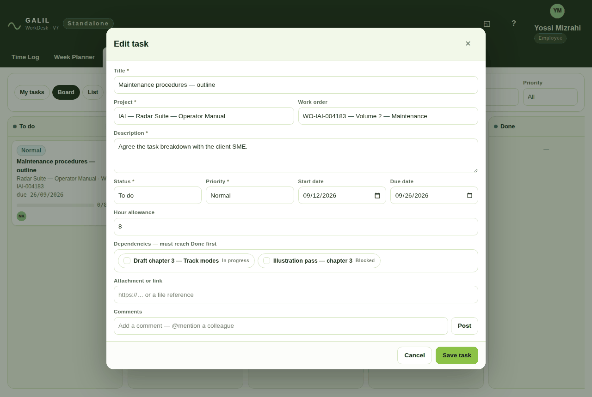
| Field | Notes |
|---|---|
| Work order | Required if the project is work-order tracked. |
| Status | To do · In progress · Blocked · In review · Done · Cancelled. |
| Priority | Low · Normal · High · Critical. Shown as a coloured chip on the card. |
| Hour allowance | Budgeted hours for the task. Drives the consumption bar on the card and the prompt when the task is closed. |
| Assignees | Several people per task. A task with none sits in the project backlog. Finance and Viewer accounts cannot be assigned. |
| Dependencies | Other tasks on the same project that must reach Done first. |
| Attachment or link | A URL or a file reference. |
| Comments | Available once the task is saved. |
Who can change or edit a task
Its assignees (updateOwnTaskStatus), and anyone who creates tasks on that task's project (createTasks). Only they can drag its card on the board, change its status in the List view or on the phone, or open it in the task editor with ✎. Everyone else sees the status as a chip and the task read-only — including a colleague's task on a project you share. Finance sees every task read-only.
Blocking and unblocking
A task with an unfinished dependency is forced to Blocked and cannot be dragged to another active column — the toast explains why. Completing the dependency releases every task waiting on it back to To do automatically.
Closing a task
Moving one of your own tasks to Done when you have reported less than half its allowance raises a prompt to report the remaining time first, or continue anyway.
Overdue tasks
A task past its due date and not Done or Cancelled is marked overdue on the card, shown in red in List view, and counted in the amber badge on the Tasks tab and in the manager cockpit.
Expenses
Money or hours, attached to a client and project, with evidence where the expense type demands it.
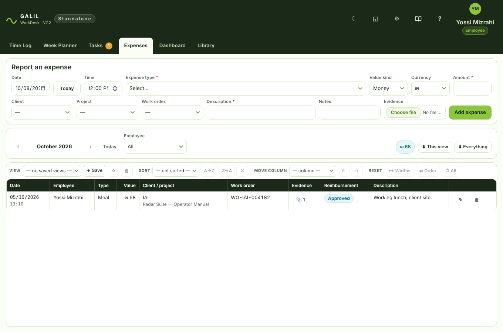
Recording an expense
- Set the Date and Time.
- Choose the Expense type. Types with a ceiling show it in the dropdown.
- Choose the Value kind: Money (with a currency) or Hours.
- Optionally attach it to a client, project and work order.
- Write a Description — required. Add notes if useful.
- Attach Evidence if the type requires it, then Add expense.
An expense at or under its type's auto-approval ceiling is approved on the spot. Above the ceiling it is saved as Submitted and routed to approval as above the ceiling for that type. Where the type requires evidence, the form will not submit without an attachment at all.
Reimbursement status
Four states — Submitted, Approved, Paid, Rejected. Anyone who may approve expenses changes it from the dropdown in the table — except on their own expenses, which someone else decides. Everyone else sees a coloured chip.
Reporting for someone else
With approveExpenses an Assignee selector appears on the form, scoped to the people you can see. The same people appear in the month filter.
Editing, deleting and exporting
✎ loads the expense back into the form; 🗑 deletes it, with Undo. You may act on your own expenses always, and on other people's if you may approve expenses. ⬇ This view and ⬇ Everything export with evidence filenames listed in their own column.
Replacing or removing an evidence attachment
Once a file is attached, it appears as a chip beside the Choose file button with its own two controls: a small replace icon that opens the file picker again and swaps the file in place, and an ✕ that removes it — the expense stays otherwise unchanged. The 📎 count in the table is itself a button: click it to reopen that expense's row in the form so you can replace or remove its attachment.
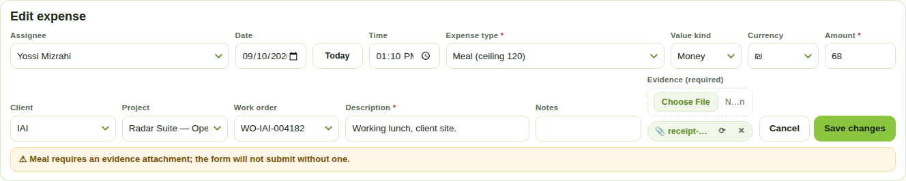
If the expense type demands evidence, removing the only attachment leaves the same warning the form shows when none was ever attached — Save changes is blocked until a new file is chosen.
Management
The day-to-day operational tab — budgets, work orders and the company's master records — behind one Management tab in the top bar. Up to V7, budgets and work orders lived on their own tab while people, assignments, clients, projects, expense types and the verification queue lived behind the ⚙ button; V7.1 brings all of it together here. Its sub-tabs run, left to right: People · Teams · Clients · Projects · Work Orders · Budgets · Assignments & Allowances · Expense Types · Verification Queue, with Pending Activation last for Operations and the CEO. Which of them you see depends on your role. For how these records relate to each other, see chapter 2.
Project Managers see budgets on their own projects. Operations Managers, the CEO and Finance see all of them; Finance may look but not change. Everyone else has no Budgets section — the Management tab itself only appears once at least one section applies to you.
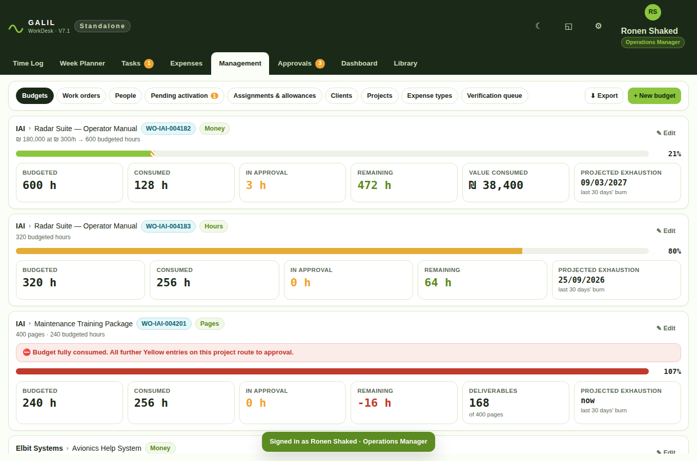
Creating a budget
- Click + New budget.
- Pick the Client, then narrow to a Project and optionally a Work order. Leaving the project blank budgets all of that client's projects together.
- Choose a Pricing basis and fill the matching fields.
- Save budget.
| Basis | What you enter |
|---|---|
| Money | Currency, amount and hourly rate. Budgeted hours are derived — amount ÷ rate — and the field goes read-only. |
| Hours | Budgeted hours directly. |
| Pages / Words / Custom | Budgeted units, a unit name, how many are produced so far, and budgeted hours alongside. |
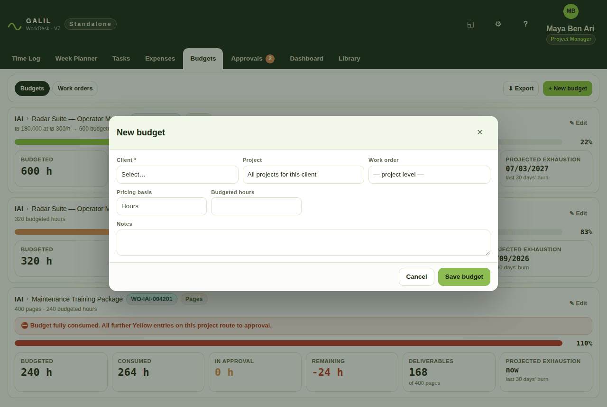
Reading a budget card
| Figure | How it is calculated |
|---|---|
| Consumed | Registered Yellow and Blue hours in the budget's scope. A work-order budget counts only that work order; a project budget counts the project. |
| In approval | Pending Yellow and Blue hours in the same scope. Not yet consumed — but coming. |
| Remaining | Budgeted minus consumed. Turns red when negative. |
| Value consumed | Money basis only — consumed hours × rate. |
| Deliverables | Unit bases only — produced against budgeted units. |
| Projected exhaustion | Extrapolated from the last 30 days' burn. Reads now if already exhausted, — if nothing has been burned. |
At 90 % the card shows an amber banner, visible to the project owner and Finance. At 100 % it turns red and every further Yellow or Blue entry on that project routes to approval.
Change history
Editing a budget's basis, amount, rate, hours, units or currency appends to its history. The History button opens a table of when, who, which field, and the before-and-after values.
Work orders
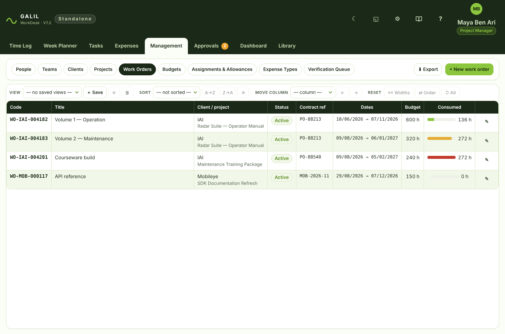
- Switch to Work orders and click + New work order.
- Pick the project — WorkDesk proposes a code in the form
WO-[client initials]-[6 digits]. You may override the digits, but the shape is enforced. - Give it a title, a status (Active, On hold, Closed), a contract reference and dates.
- Enter Budgeted hours for this work order and a budget record is created or updated for you.
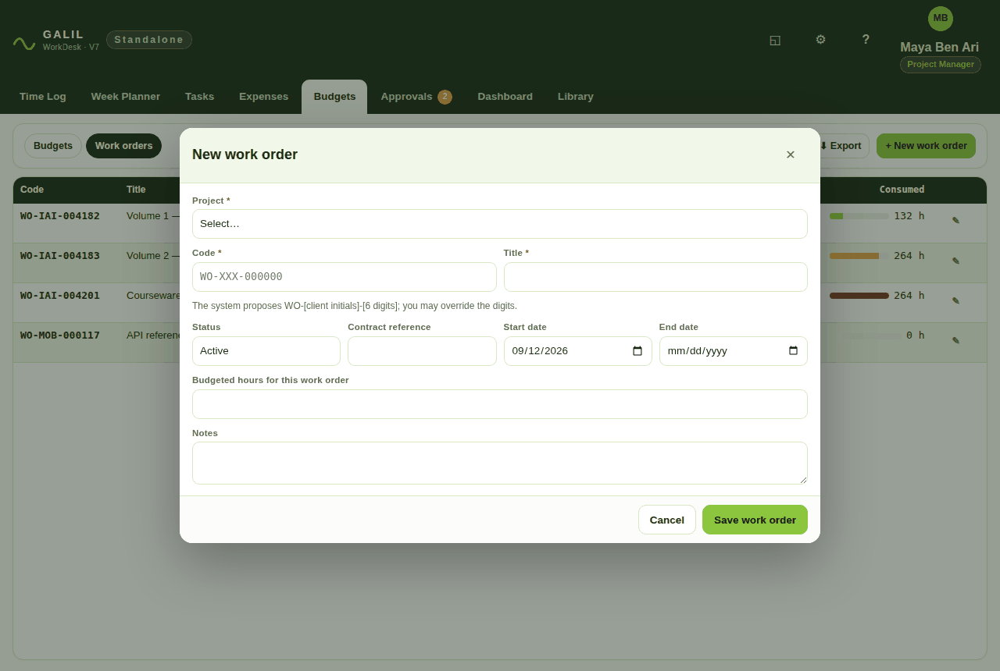
Creating the first work order on a project marks that project WO tracked. From then on, every Yellow or Blue entry on it must name a work order.
People
Everyone, with email, role, team, manager and status. Operations Managers and the CEO change roles from the dropdown here and can Deactivate or Reactivate an account — except their own, which another administrator changes. Everyone else sees the same list read-only. The Used by column counts the records each person is attached to.
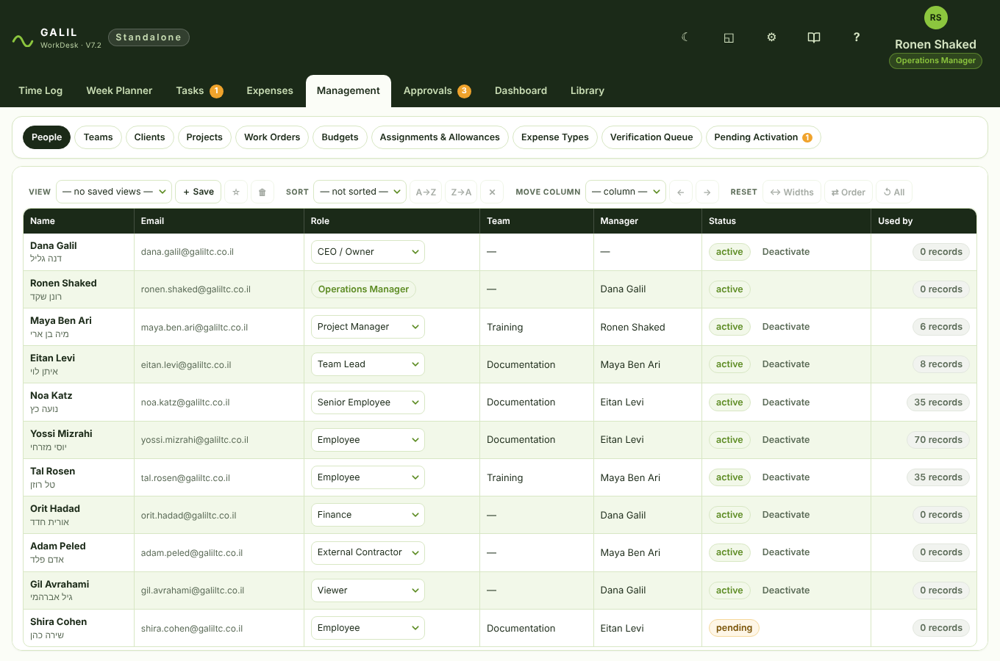
Teams
The second sub-tab, after People. Team Leads, Project Managers, Operations Managers and the CEO set up teams here, place people in them, choose each member's direct manager and ask other teams for people. Every team in the company is shown as a card; your own teams come first.
The team card
Each card shows the team's colour and initials, its name, department and short code, its description, the team lead, location and contact, its main clients, and its members as avatars — temporary members (on loan from another team) have a dashed outline. On your own teams the card offers Manage and Edit details; on other teams it offers Request a member.
Creating or customising a team
- Click + New team (or Edit details on a card).
- Fill the three required fields: Name, Description and Department. The department list covers the usual departments of a technical-writing company — Technical Writing, Documentation, Training & Instructional Design, e-Learning Development, Localization & Translation, Editing & Proofreading, Illustration & Graphics, Information Architecture, Content Strategy, API & Developer Documentation, Quality Assurance, Project Management, Operations, Finance & Administration, Sales & Business Development, IT & Tools — or choose Other — type it and type your own.
- Optionally set a short code, a colour, a team email or channel, a location and the team's main clients. Main clients are offered first when the team asks for a person on loan.
- Operations Managers and the CEO also choose the Team lead; anyone else who creates a team becomes its lead.
- Click Create team or Save team.
Placing available people
The Available people panel lists everyone who has no team, no direct manager, or both. Choose one of your teams in Place in team…: the person joins it and its team lead becomes their direct manager. Usually a person is placed with a manager who leads a team, or in a team whose lead becomes their manager.
Manage on one of your cards opens the team: change each member's direct manager from the dropdown, take someone out with Remove (their direct manager is kept), or add a person with Add a person and Their direct manager. Delete team works once the team has no members.
Requesting a person from another team
Use Request a member on another team's card, Request a team member at the top, or Request someone from another team inside Manage. Choose what you are asking for:
| Temporary — for a client's project or task | Permanent transfer | |
|---|---|---|
| You fill in | The person, your team, the client, project and optionally task, from and to dates, an optional hour allowance and a reason | The person, your team and a reason |
| Sent to | The person you choose in Send the request to: the person's team lead, their direct manager, or the CEO | |
| Appears as | A Team loan in Approvals | A Team transfer in Approvals |
| On approval | The person keeps their own team and manager, shows in your team as a temporary member for those dates, gets an assignment on the project (with the allowance you set, valid only between the dates) and is added to the task | The person moves to your team and your team lead becomes their direct manager |
The Team requests list at the bottom of the sub-tab shows the requests you sent, the ones you were asked to decide, and those involving your teams, with their status.
Who can do what
Team Leads and Project Managers manage only the teams they lead. They can place people who have no team or who are in another of their own teams — but not themselves, an Operations Manager or the CEO; anyone else has to be requested. Nobody changes their own direct manager. Operations Managers and the CEO manage every team and choose each team's lead.
The direct manager receives the person's sick and vacation requests. The team lead is first in line for the person's other approval requests, with the direct manager next. See chapter 2 for the full routing.
Pending activation
New sign-ups wait here. For each one:
- Confirm or change the role they requested.
- Set their team.
- Give them an initial project and an allowance in hours.
- Activate — or Reject, which closes the account.
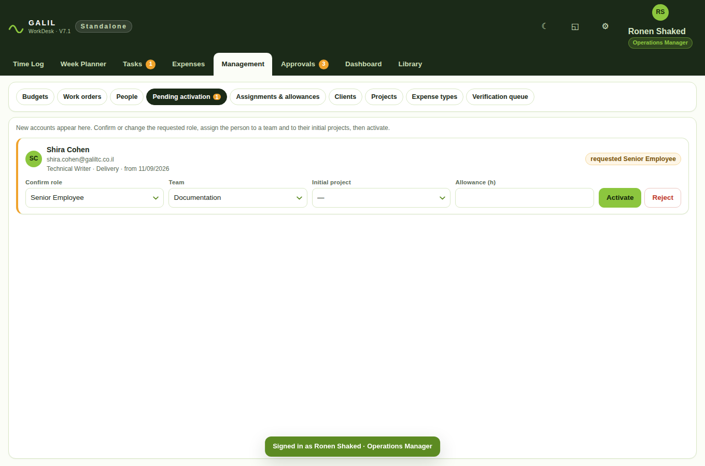
Assignments & allowances
The control that decides whose Yellow and Blue time registers quietly and whose goes to approval.
| Allowance value | Effect |
|---|---|
Blank (∞) | Unlimited within the project budget. |
| 0 | Assigned but not yet funded — every entry goes to approval. |
| A number | Hours that person may report on that assignment before approval is required. |
Allowance is set per assignment, not per person: the same writer can hold 40 hours on one work order and 200 on another. Edit a number in place and it saves when you leave the field. Your own allowance is shown read-only here — raise it through My assignments → Request hours, like anyone else; 🗑 removes the assignment. Blue hours draw on the allowance and the budget just like Yellow hours.
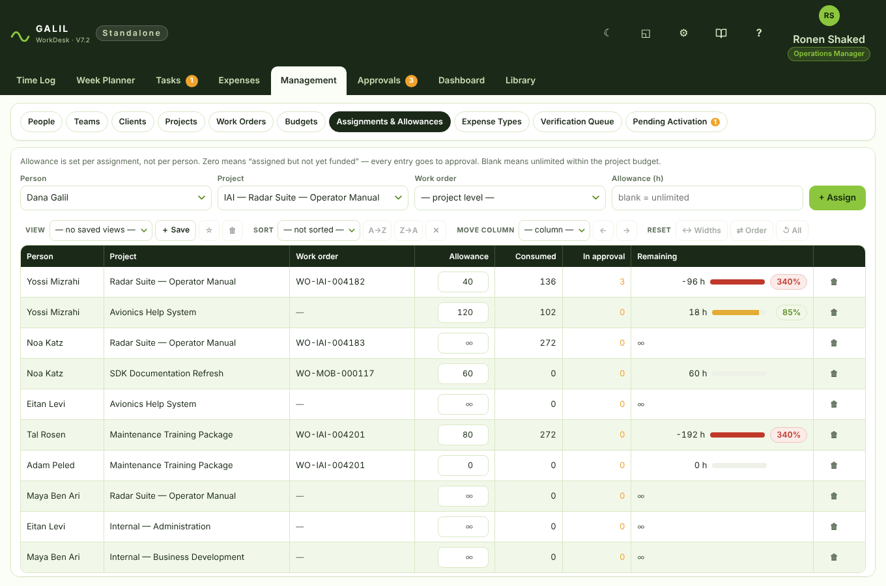
Clients, Projects and Expense types
Each is a table with an add band above it. Rename with ✎, remove with 🗑.
The Used by column counts the saved records that reference an item. If it is above zero, removal is refused. Deactivate or close it instead.
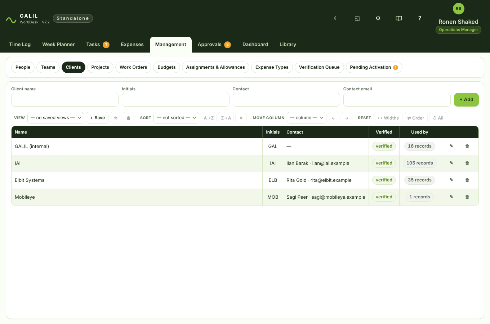
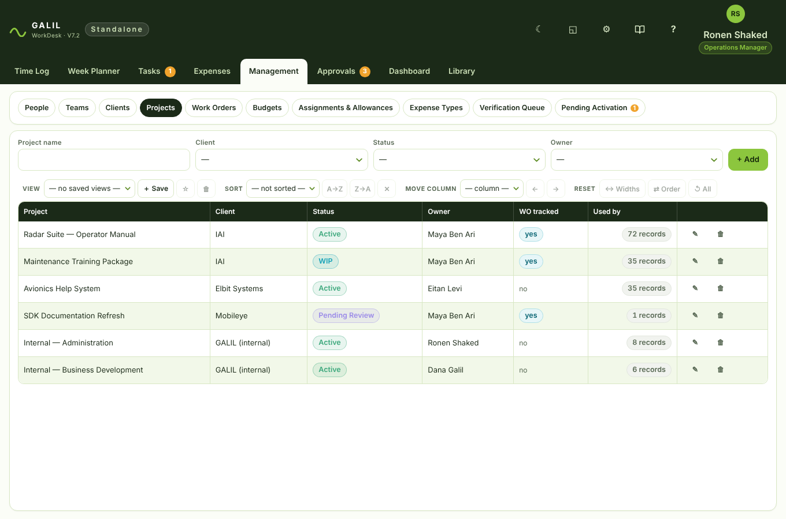
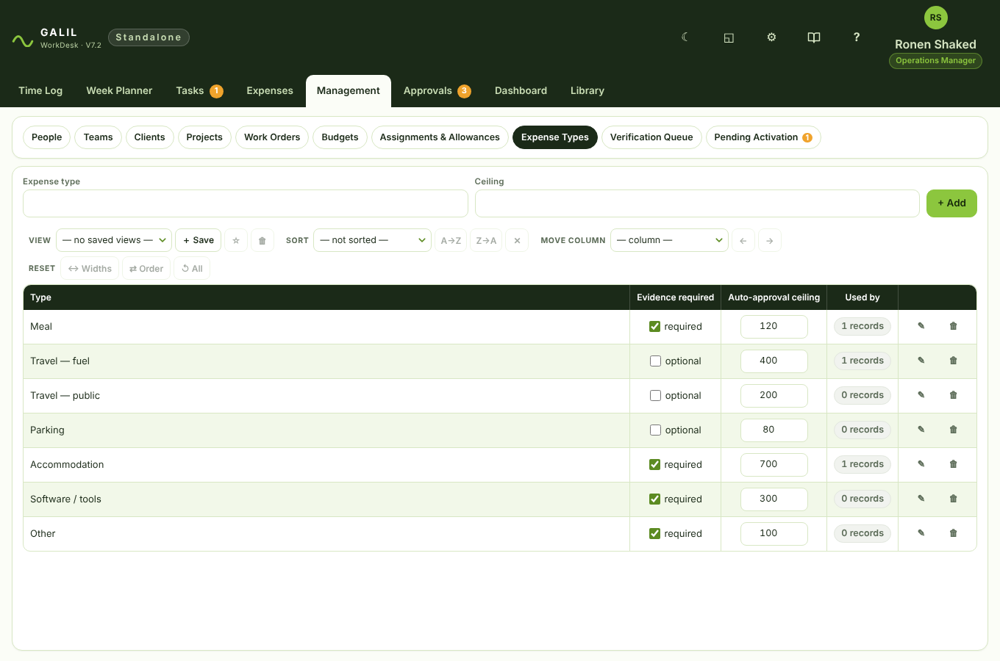
Verification queue
Clients and projects created by approving an unlisted item wait here until a manager clicks Confirm. It is the tidy-up step after a busy week of typed-in names.
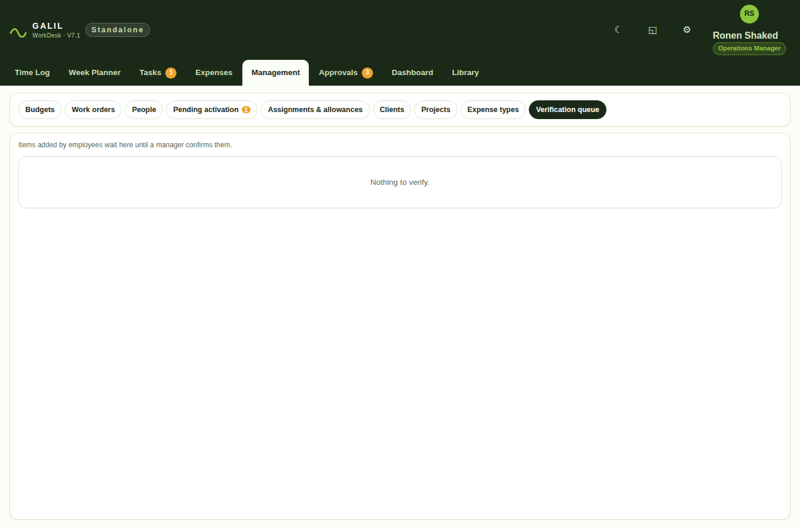
Approvals
One queue for everything the engine could not decide by itself: time entries, allowance increases, unlisted list items, over-ceiling expenses, new accounts, role changes and retroactive edits.
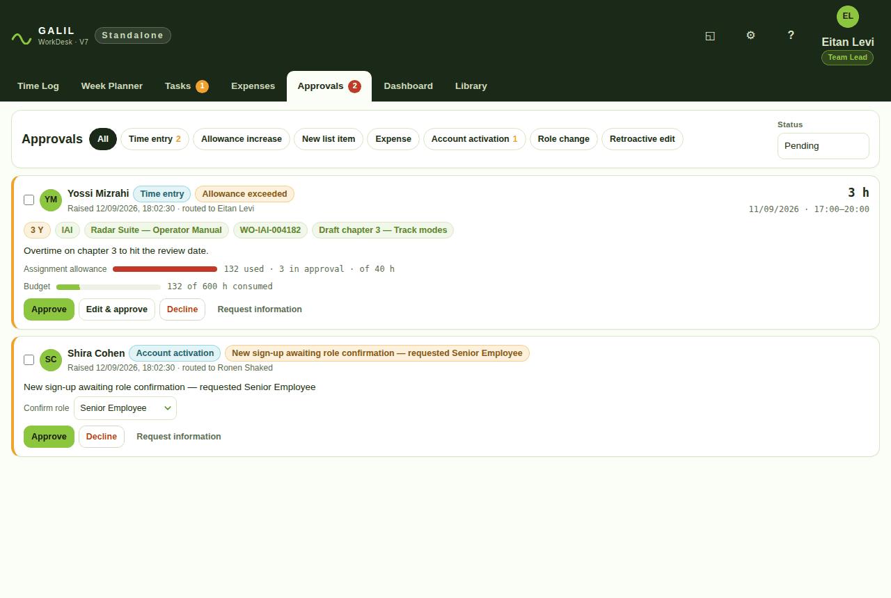
What lands in your queue
- Requests routed to you directly.
- Requests from anyone in your approval scope — your team for a Team Lead, your projects for a Project Manager.
OPSandCEOsee everything: higher in the chain may always act.- Never your own. A request you raised is invisible to you as an approver, whatever your role.
How a request is routed
For most reasons, WorkDesk tries in order: your team's lead → your direct manager → a Project Manager → the Operations Manager → the CEO, skipping anyone who is inactive, cannot approve time, or is the requester.
For a Leave request (Sick or Vacation) it tries your direct manager first, then falls back to the order above.
A Team loan or Team transfer goes to whoever the requester chose — the person's team lead, their direct manager or the CEO. The card shows the person, the two teams and, for a loan, the client, project, task, dates and hour allowance. Approving a loan creates the person's assignment and task membership; approving a transfer moves them and makes the new team's lead their direct manager. See Teams.
For Budget exceeded it skips the team entirely and goes Project Manager → Operations Manager → CEO, because the decision belongs to whoever owns the budget.
The four actions
| Action | What happens |
|---|---|
| Approve | The entry registers, or the expense is approved, or the account is activated. The requester is notified. |
| Edit & approve | Opens the entry in a full Time Log form. Correct it, then Save & approve. Both the original submission and the corrected version are kept in the audit log. You may also set the person's allowance on that assignment while you are there. |
| Decline | A written reason is mandatory. The entry becomes Cancelled, stays visible to the requester with your reason, and never contributes hours. |
| Request information | Sends a question. The request stays Pending and the exchange appears as a thread on the card. |
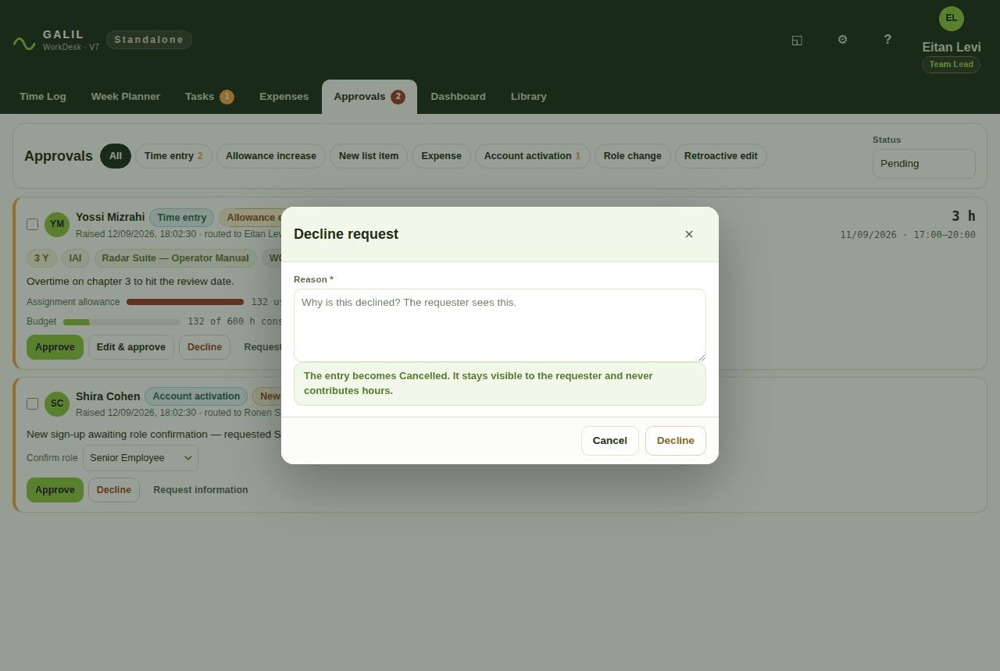
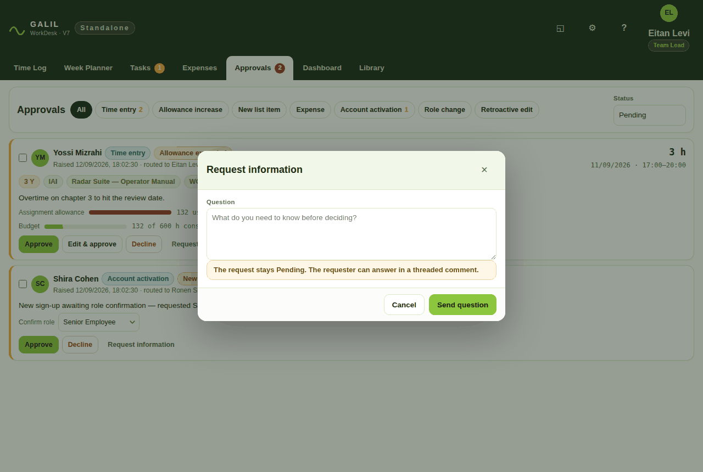
What approval quietly fixes
- Unlisted item — the typed client or project becomes a real, verified master-list record, and the entry is re-pointed at it.
- Not assigned — an assignment is created for that person on that project or work order, so the next entry does not re-trigger.
- Allowance exceeded — you are asked to choose. Approve only registers this entry and leaves the allowance alone; Approve and raise allowance raises it by exactly the overage, so the next entry does not re-trigger either.
- Account activation — confirm the role in the dropdown on the card before approving.
Bulk approval
Tick the checkbox on several cards and a Bulk approve button appears. Requests whose reason is Budget exceeded cannot be ticked and cannot be bulk-approved — they must be handled one at a time.
Reviewing decisions
Switch the Status selector to Approved or Declined to see history. You will see decisions you made, decisions routed to you, and — as OPS or CEO — everything. Each shows who decided, when, and any note.
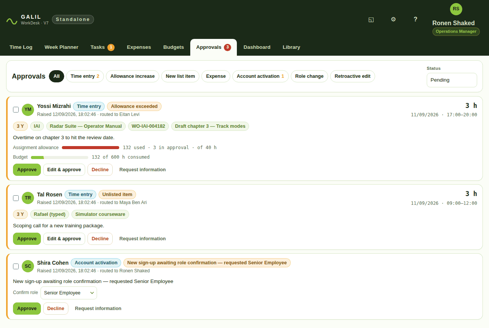
Dashboard
Registered time only, over a period you choose, with a manager cockpit on top for anyone who has people or budgets to watch.
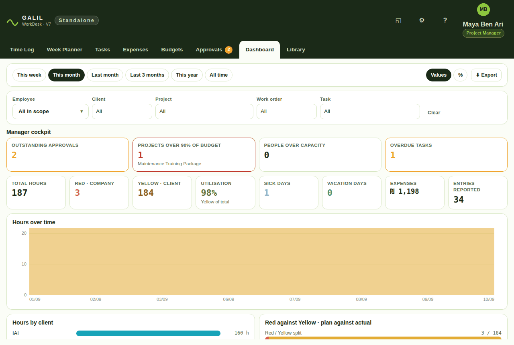
Scope
With dashboardCompany you see everyone in your scope and get an Employee multi-select. Without it — Employee, Senior Employee — the Dashboard shows your own figures only. External contractors have no Dashboard at all.
The manager cockpit
Shown to Team Leads, Project Managers, Operations Managers, Finance and the CEO. Four tiles that turn colour when they need attention:
- Outstanding approvals — requests waiting on you.
- Projects over 90 % of budget — named in the subtitle.
- People over capacity — planned beyond contracted hours this week.
- Overdue tasks.
The figures
Total hours · Red · Yellow · Utilisation (Yellow as a share of total) · Sick days · Vacation days · Expenses per currency · Entries reported. Below them, hours over time as a stacked Red-and-Yellow area chart, hours by client as a ranked bar list, and two comparison bars: the Red/Yellow split and planned against actual with its variance.
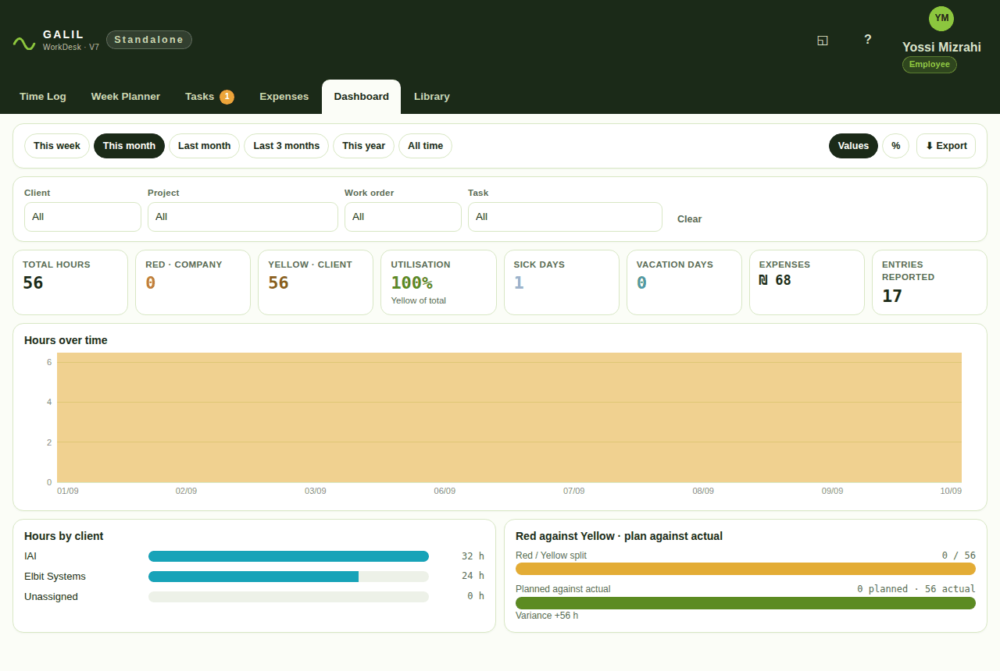
Filters and export
Filter by employee, client, project, work order and task; Clear resets them. ⬇ Export writes the underlying entries — not the chart — so the numbers can be checked.
Library
The house knowledge base — style decisions, terminology rulings, snippets, client conventions — searchable across titles, bodies and tags.
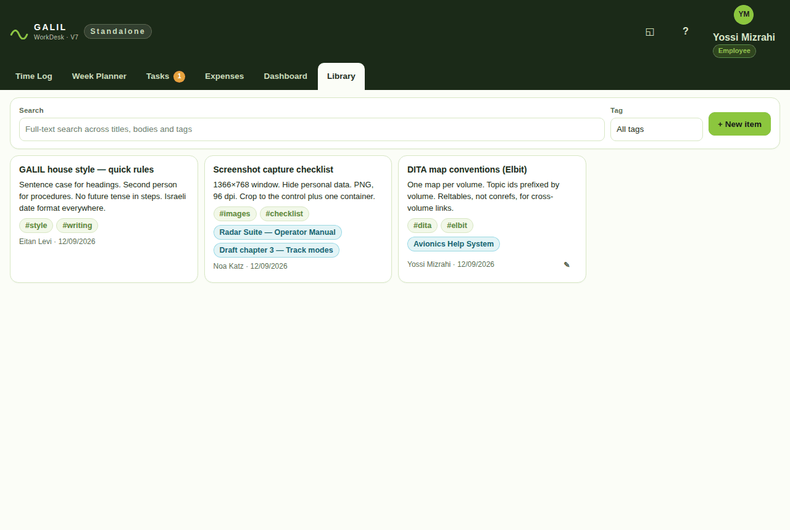
Adding an item
- Click + New item.
- Give it a title — required — and a body.
- Add comma-separated tags and a link if there is one.
- Optionally attach it to a project and a task, and add an image.
- Tick Private to me if it is a personal note rather than house knowledge.
- Save.
Who can edit what
- Private items are visible only to their author.
- You may edit or delete your own items.
OPSandCEOmay edit anyone's. - Finance can read the Library but not write to it. Contractors and Viewers have no Library tab.
My assignments and allowances
The ◱ button in the top bar. Where your funded work lives, and where you ask for more hours before you run out.
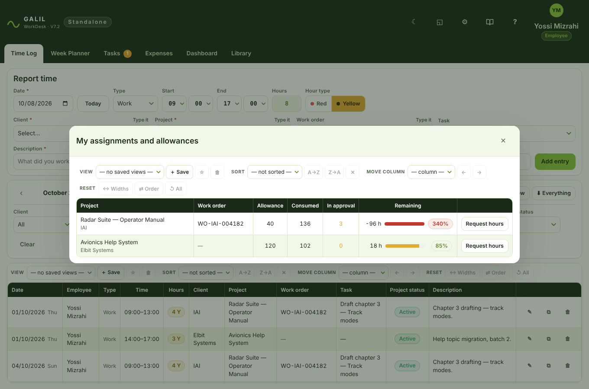
Requesting additional hours
- Click Request hours on the assignment that needs them.
- Read the four figures — allowance, consumed, remaining, in approval — then enter the additional hours.
- Write a justification. Both fields are required.
- Submit request.
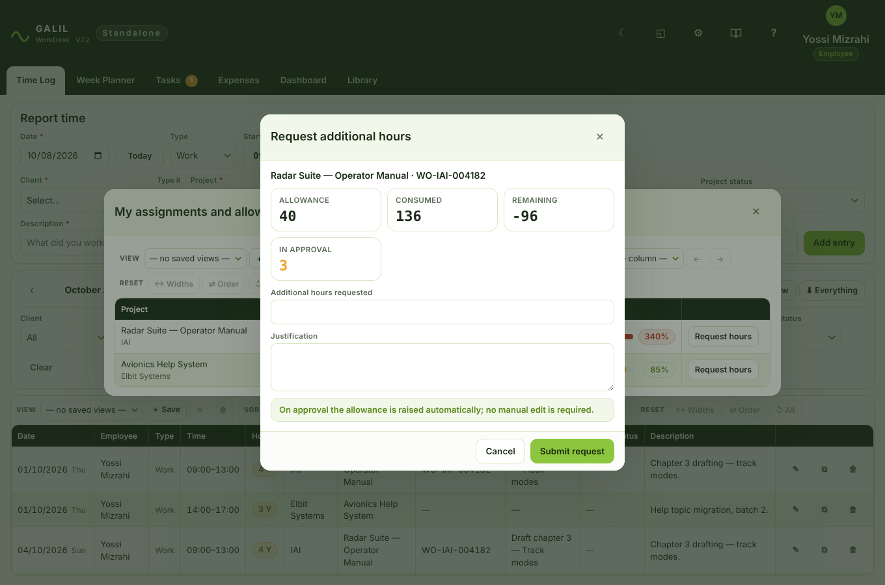
The request appears in the approval queue as an Allowance increase, showing the hours asked for and your justification. On approval, the allowance is raised automatically.
The ◱ button still opens, but shows "You hold no project or work-order assignments yet" in place of the table. Ask an Operations Manager to assign you to a project — until then, every Yellow or Blue hour you report will route to approval as Not assigned.
System administration
One modal behind the ⚙ button, with sections down its left side. Up to V7 this was called Lists & data administration and held everything from people to the audit log; in V7.1 the day-to-day record-keeping (people, activation, assignments, clients, projects, expense types, verification) moved to the Management tab, so this modal now holds only the settings a company runs once and rarely touches.
Roles & permissions
A read-only view of the same permission matrix printed in chapter 4, for reference while you are signed in as a particular role.
Company settings
OPS and CEO only.
- Daily soft limit (default 9 h) — entries above it register with an amber flag.
- Daily hard limit (default 12 h) — entries above it route to approval.
- Default weekly hours (default 42 h).
Month close and payroll lock
- Pick the month and click Close month.
- If the month still holds pending requests, WorkDesk refuses and says how many. Clear the queue first.
- On close, every registered entry in that month becomes Locked and can no longer be edited.
- A closed month appears as a
🔒chip with a reopen link, which unlocks its entries again.
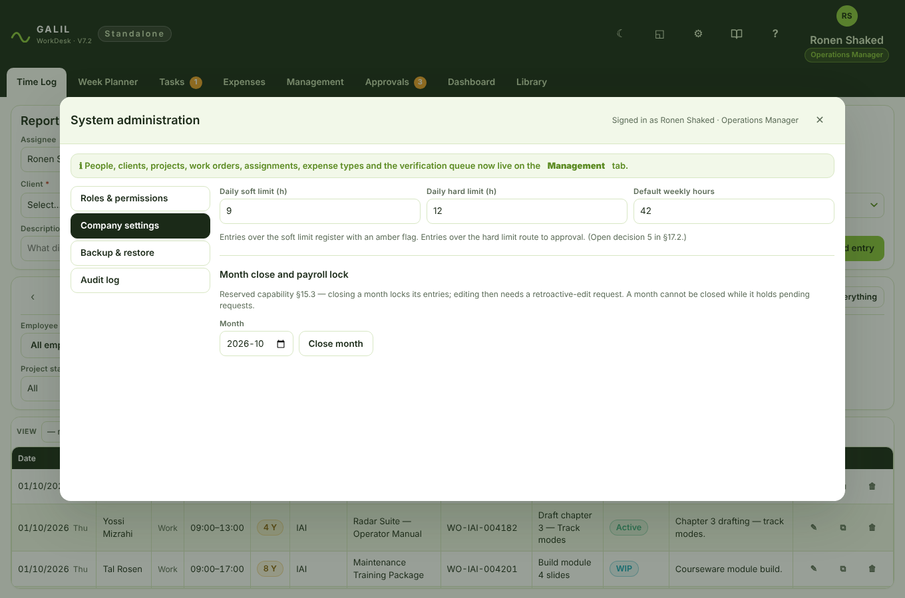
Backup & restore
See chapter 16 for the file format and the three restore operations — it has its own chapter because it matters that much.
Audit log
Append-only. Every sign-in, sign-out, role change, approval decision, budget edit, allowance change and deletion is recorded with actor, timestamp, entity and device. Visible to OPS, FIN and CEO; the most recent 400 entries are shown, 4,000 retained.
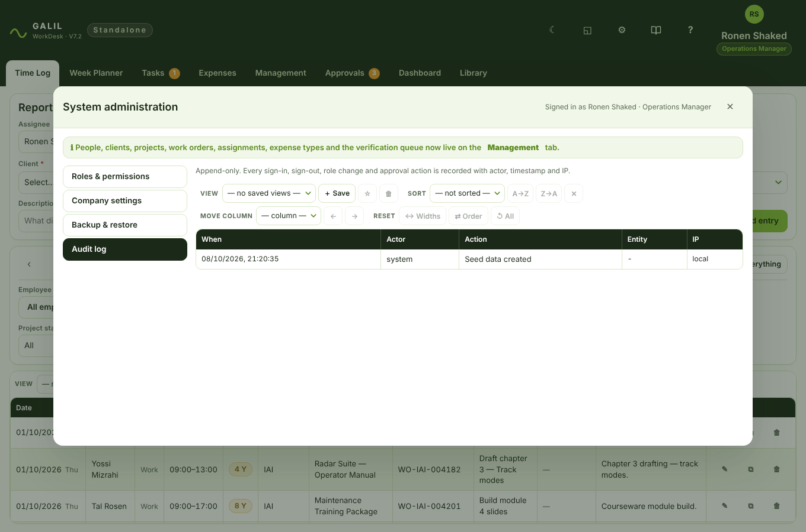
Backup and restore
In a standalone build this is the only safety net there is. OPS and CEO only.
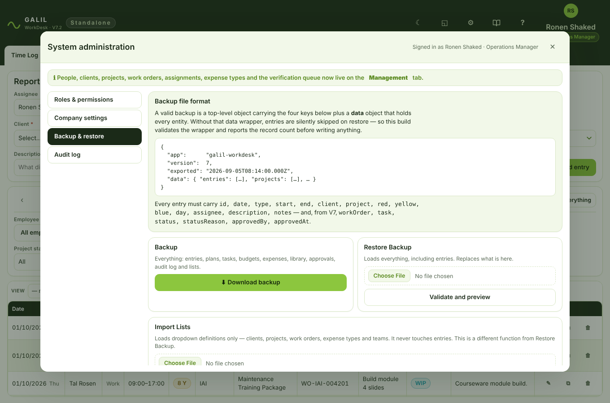
The file format
A valid backup is a JSON object with four top-level keys, one of which wraps everything else:
| Key | Value |
|---|---|
app | Must be exactly "galil-workdesk". Anything else is refused. |
version | 7 for this build. |
exported | ISO timestamp. |
data | The object holding every entity: entries, projects, tasks, budgets, expenses, library, approvals, audit and the lists. |
The three operations
| Operation | What it does |
|---|---|
| Download backup | Writes everything to galil-workdesk-backup-YYYY-MM-DD.json. |
| Restore everything | Loads everything, including entries, and replaces what is there. Choose the file, click Validate and preview, check the record counts, then Restore everything. |
| Import lists only | A different function. Loads dropdown definitions only — clients, projects, work orders, expense types and teams — and never touches entries. Existing items are matched by id, name or code and skipped. |
Browser storage is finite. If it fills, WorkDesk warns that the last change was not saved and asks you to download a backup and remove attachments. Take that message seriously — it means a write failed.
Excel exports
Five modules export. Every file is a real .xlsx with a branded title band, a line recording the filter and who exported it, a frozen and filtered header row, true Excel dates, and a totals row.
| From | File | Contains |
|---|---|---|
| Time Log | galil-time-YYYY-MM.xlsxgalil-time-all.xlsx | Entries with Red, Yellow and Days totalled. Pending entries go to a separate Pending worksheet. |
| Week Planner | galil-plan.xlsx | Planned against actual per block, with a variance column. |
| Expenses | galil-expenses-YYYY-MM.xlsxgalil-expenses-all.xlsx | Amounts and hours totalled, reimbursement status, evidence filenames. |
| Budgets | galil-budgets-all.xlsx | Budgeted, consumed, in approval, remaining, % used, projected exhaustion, units and produced. |
| Dashboard | galil-dashboard-all.xlsx | The entries behind the charts for the selected range. |
Scope
Export scope follows the permission matrix, not the screen. ⬇ Everything gives an Employee, Senior Employee or External Contractor their own records; a Team Lead their team; a Project Manager their projects; and Operations, Finance, the CEO and Viewers everything.
Date columns carry real Excel dates formatted Sunday, 26/07/2026, so they sort and filter properly. Red and Yellow columns are accent-coloured to match the application.
Reference
The fixed vocabularies, defaults and limits, in one place.
Statuses
| Set | Values |
|---|---|
| Entry status | Registered · Pending · Cancelled · Locked |
| Project status | Active · WIP · Draft A · Draft B · Pending Information · Pending Review · On hold · Done |
| Task status | To do · In progress · Blocked · In review · Done · Cancelled |
| Task priority | Low · Normal · High · Critical |
| Work-order status | Active · On hold · Closed |
| Reimbursement | Submitted · Approved · Paid · Rejected |
| Request types | Time entry · Leave request · Team loan · Team transfer · Allowance increase · New list item · Expense · Account activation · Role change · Retroactive edit |
| Pricing bases | Money · Hours · Pages · Words · Custom |
Defaults and limits
| Setting | Default | Where it is changed |
|---|---|---|
| Daily soft limit | 9 h | Company settings |
| Daily hard limit | 12 h | Company settings |
| Weekly hours | 42 h | Company settings, or per person |
| Hour rounding | 0.5 h | Fixed |
| Session lifetime | 12 h | Fixed — inactivity |
| Failed sign-ins before lockout | 5 | Fixed |
| Password reset link validity | 30 min | Fixed |
| Minimum password length | 12 | Fixed — plus upper, lower and a digit |
| Burn-rate window | 30 days | Fixed |
| Audit rows shown | 400 | Fixed — 4,000 retained |
Reserved for a later version
- Hebrew and right-to-left layout — the language toggle on the sign-in card acknowledges the request and stays in English. V8.
- Annual Sick and Vacation balances — leave is approved by your manager today; no annual balance is checked yet.
Demonstration accounts
The standalone build seeds one account per role, all with the password GalilWorkdesk1. Sign in as each to see exactly what that role sees.
| Role | Name | |
|---|---|---|
CEO | Dana Galil | dana.galil@galiltc.co.il |
OPS | Ronen Shaked | ronen.shaked@galiltc.co.il |
PM | Maya Ben Ari | maya.ben.ari@galiltc.co.il |
TL | Eitan Levi | eitan.levi@galiltc.co.il |
SEN | Noa Katz | noa.katz@galiltc.co.il |
EMP | Yossi Mizrahi | yossi.mizrahi@galiltc.co.il |
FIN | Orit Hadad | orit.hadad@galiltc.co.il |
EXT | Adam Peled | adam.peled@galiltc.co.il |
VIEW | Gil Avrahami | gil.avrahami@galiltc.co.il |
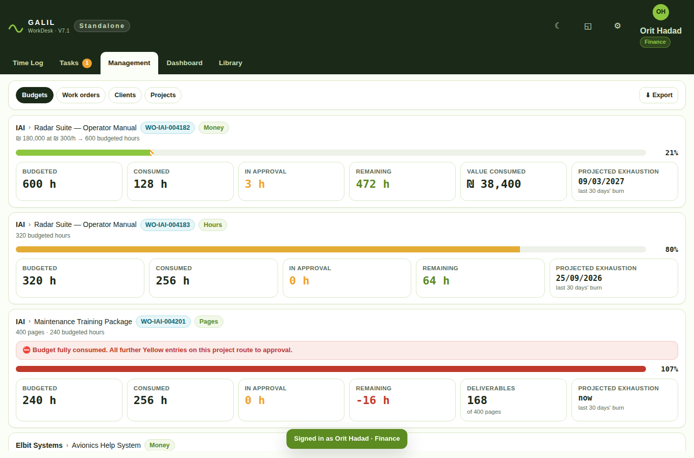
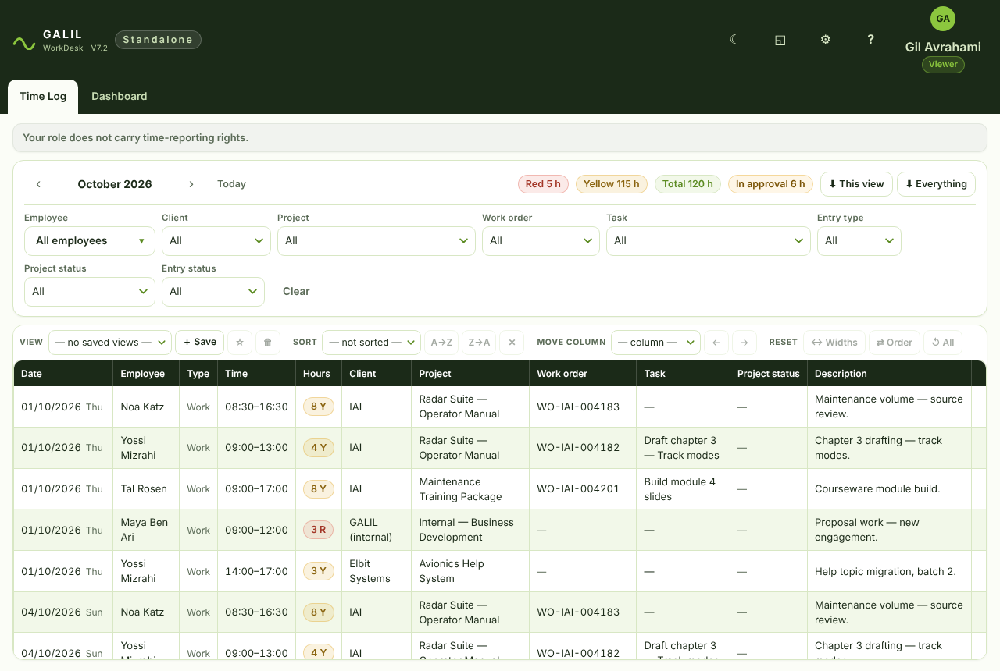